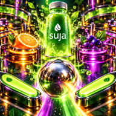

HIT THE THREE FRUIT BUMPERS
WELCOME TO THE JUICE FACTORY
FRESH JUICE. FULL TILT.
3 balls · 4 juices · Rainbow Rush
TWO FLIPPERS. ONE FRESH OBSESSION.
Your run is paused. Reload to restore the graphics.
Pull the plunger. Hold LAUNCH, then release. A stronger plunge changes your path. Time your flippers to aim; the tip sends a powerful shot toward the upper table. Hit the lit top lane for a skill-shot bonus. Before launch, tap a flipper to change the lit lane.
Keep it alive. Tap or hold the left and right sides of the table, or the large flipper buttons. Keyboard: arrow keys or A/D. Space holds and releases the plunger. The opening ball save returns an early drain.
Fill. Cap. Celebrate. Hit all three fruit bumpers to collect the ingredients. Then shoot the glowing central bottle to bottle your juice. Complete all four colors to trigger 45 seconds of Rainbow Rush multiball and triple points.
Find the big shots. Shoot the right-hand conveyor ramp for a Cold Press loop. Three ramps or a full target bank raise the multiplier, up to 4×. Spin the juice spinner, hit targets, and shoot loops to charge 12 seconds of Power Press double points. Link different shots for a combo bonus. Each ball also starts with one outlane kickback. Complete the top lanes to relight ball save. During Rainbow Rush, the bottle awards jackpots.
Give it a nudge. Tap NUDGE or press ↑ to rescue a low ball. Too many nudges too quickly cause a short tilt and disable the flippers. Earn extra balls at 75,000, 150,000, and 300,000 points.
Follow the gold. Fill three timed factory orders to light a Delivery Jackpot. Shoot the golden bottle for 20,000+ points and a second ball. Factory Frenzy makes every bumper worth 1,000+ points for 20 seconds. Each completed order relights your kickback; unfinished order progress carries into your next ball.
Arcade starts with three balls. Practice has unlimited balls and stays on this device.
TABLE ON HOLD
YOUR CABINET
Sound starts after your first tap.
Original Pinball soundtrack and cabinet callouts. Mechanical impacts use CC0 recordings by Kenney; rolling, spinner, pump, target, and scoring layers are original sound synthesis.
THE HIGH SCORE DEPARTMENT
Loading scores…
THAT WAS A FRESH RUN.
PINBALL TOP 10